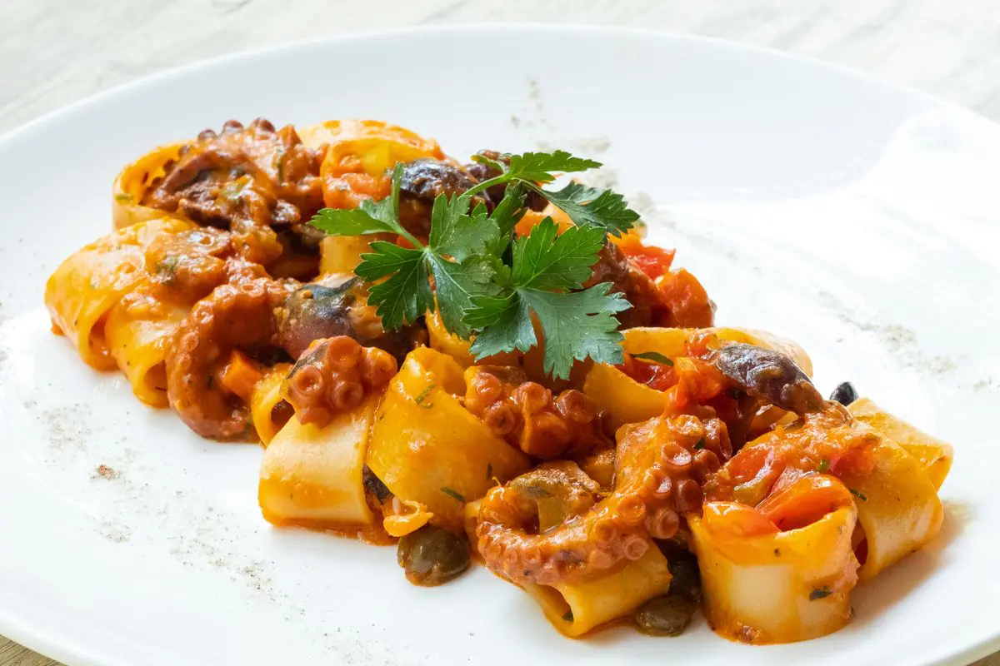

Il Genovese di Polpo

Descrizione
La genovese di polpo è una gustosissima variante della ricetta classica fatta con la carne.
Una variazione saporita e golosa ideale per chi ama sperimentare in cucina,
la sapidità del polpo va in contrasto in maniera perfetta con la dolcezza delle
cipolle, il mix è favoloso!
Ingredienti
- Rigatoni
- Polpo
- Cipolle dorate
- Sedano
- Carote
- Aglio
- Vino bianco
- Olio extravergine d'oliva
Per condire
- Pecorino toscano stagionato
Come preparare il Genovese di Polpo
- Per preparare i rigatoni con genovese di polpo, iniziate mondando le cipolle dorate,
poi tagliatele a falde sottili. Quindi spuntate, pelate e tritate la carota.
- Pelate anche il gambo di sedano e tritatelo. In un tegame scaldate un filo d'olio
abbondante con uno spicchio d'aglio mondato e intero. Poi versate sedano e carota tritati.
Lasciate insaporire 5 minuti, mescolando di tanto in tanto. Dopo aver tolto il becco,
tritate il polpo già eviscerato a tocchetti di un paio di centimetri.
- Versate il polpo nel tegame e rimuovete l'aglio. Il polpo tirerà fuori la sua stessa
acqua, quindi alzate il fuoco a fiamma medio-alta e sfumate con il vino bianco.
Lasciate evaporare la parte alcolica: ci vorranno pochi istanti.
- Ora abbassate la fiamma, unite le cipolle, mescolate e fate cuocere a
fuoco dolce con coperchio per circa 2:30(2 ore e mezza)-3 ore.
- Mescolate di tanto in tanto e controllate che il condimento non si attacchi al fondo
della casseruola. Quando mancheranno circa 10 minuti al termine potete lessare la
pasta al dente in un tegame con acqua bollente salata. Poi scolatela direttamente
nel condimento.
- Mescolate per amalgamare. Versate nei piatti da portata e, se gradite, condite con
del Pecorino grattugiato a piacere. La genovese di polpo è pronta per essere
gustata.